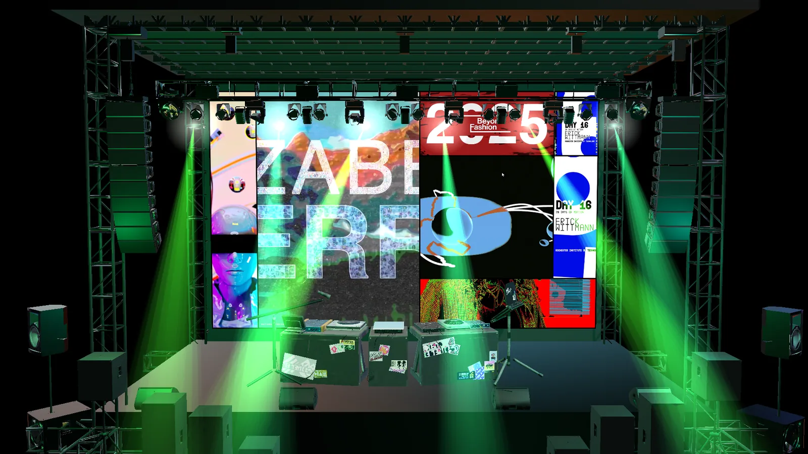

unlocked Backstage — Experiment · Ongoing
Backstage
- What
- 3D concert stage, playable in the browser
- Built with
- three.js, WebGL, GLSL
- Model
- My own stage, glTF
- Status
- Ongoing, since Oct 2026

enter the stageYou found the backstage
Thanks for looking through everything. This is where the 3D stage lives now. It used to be my homepage: the work played on the LED wall of a concert stage I modelled, and scrolling pulled the camera back from the screen to the whole stage, with lights and pyro running to the music.
It’s an ongoing experiment in two things: how far 3D WebGL can live inside an ordinary website without getting in the way, and what web UX feels like when the interface is a place instead of a page. It came off the homepage because the work should come first. Back here it can stay strange and keep changing.
What it’s testing
The screen is a web page
The LED wall isn’t a video texture. The homepage grid stays real HTML, so its videos, hovers and links keep working. Every frame it’s warped with a CSS matrix3d onto wherever the 3D screen lands, and the stage draws a see-through hole for it.
The stage is the interface
No control panel. Hover the light bar to pick a colour, click the DJ booth to change the track, and the speakers hold the volume. Each part has an invisible button kept on top of it, so mouse, touch and keyboard all work.
Keeping it light
Quality tiers for phones, a resolution that adapts to the frame rate, a compressed model and a one-cube fallback. The visualizer is a shader built like a TouchDesigner network. Reduced motion is respected.
Open questions
- Does a 3D entrance help people find the work, or just make them wait for it? testing
- Controls you discover vs. controls you’re told about. testing
- Phones: heat, battery and frame rate on a full scene. open
- Music on by default, or only when asked? open
The code
The real files, loaded live from the site, so this is always the current version. Comments are left in: they’re the notes I wrote while building it.
loading…